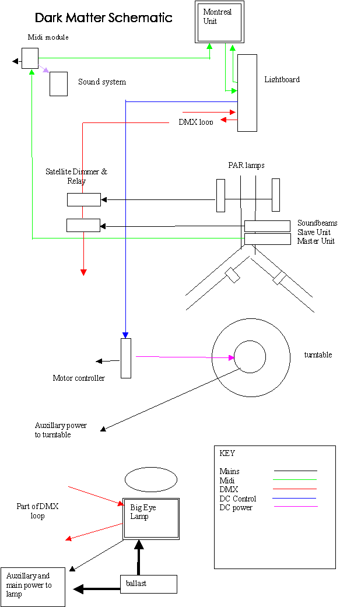
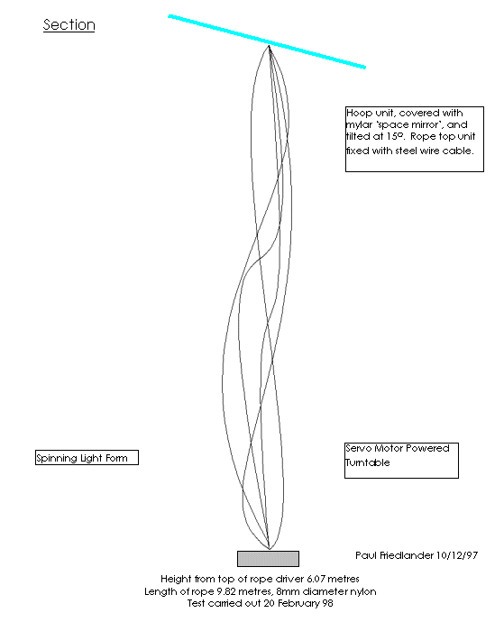
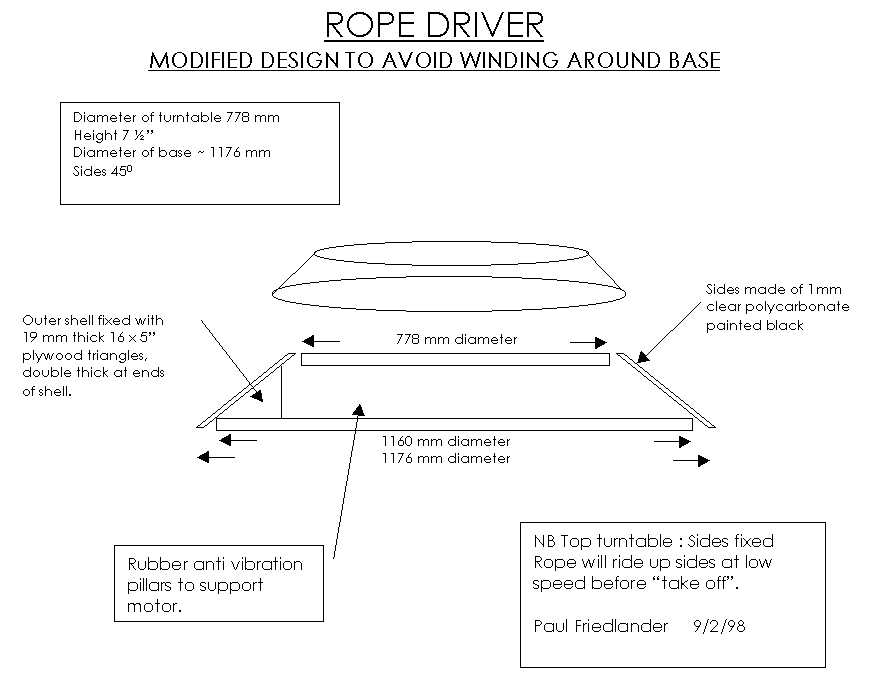

This is part of the proposal submitted to the competition: a plan of the Great Hall at The New York Hall of Science showing where Dark Matter would be installed.
Notice how the strange architecture of The Great Hall creates an amoeba like floor plan. The bays formed by the curvy-linear walls make perfect niches for the column shaped 25 foot high dynamic central luminous display of Dark Matter.

The schematic diagram is provided to show how the wiring runs. There is a single lightboard controlling the entire show. Note how another work of art from Montreal has spare computing power which is used to process the midi data before it is sent to the lightboard. The DMX signals form a loop round the Great Hall carrying digital control messages to lighting equipment.
While this system was technically sophisticated, since a number of contributors had built parts of it independently, there was no central documentation of the entire circuit and its functioning. The diagram is incomplete. There was a high level of interconnection between the various exhibitors but a consequence the show was difficult to trouble shoot.

The diagrams submitted were incredibly sparse, many details were not included and the design evolved substantially during the construction process. In this section two key ideas are conveyed. The rope is to be driven by a turntable mounted below. It will be lit by reflecting light from a mylar mirror above it. As a consequence of these design features, the weight of equipment which has to be lifted above head height is kept to a minimum.

In this diagram, we do finally see details. Although it is far from complete, it does give some idea of how the turntable was built. It is constructed of 9 mm plywood with an edge rim to give it extra rigidity. The turntable is powered by a belt drive and printed circuit motor.
In contrast no plans exist at all for the vital people barrier, a 6 foot high clear polycarbonate tube constructed around the base of the whirling rope. The design was thought out and tested by building a small model, the size of a biscuit tin.
The largest single missing piece of documentation is a description of how I upgraded the Pink Floyd color strobe. This 390,000 lumen lamp was already an awesome piece of equipment when I first saw it but I was determined to improve it further. Watch this space for more information.
Dark Matter: Section